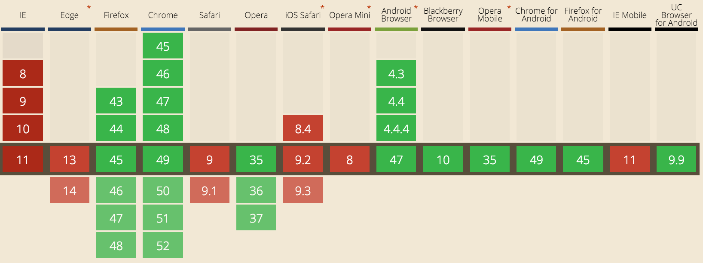
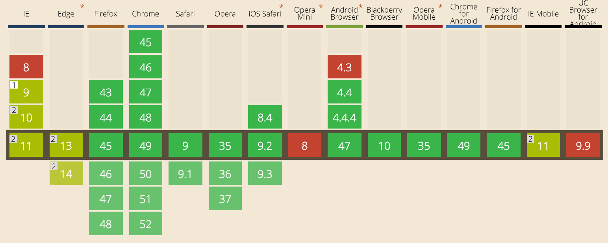
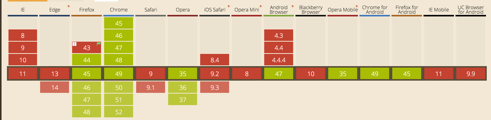
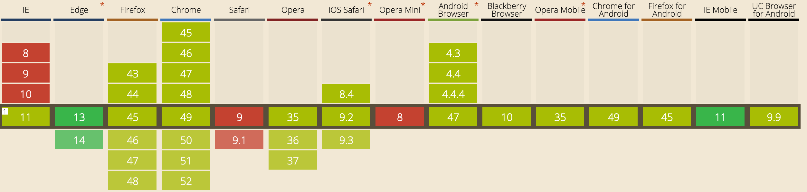

Het audio element wordt gebruikt om geluiden af te kunnen spelen op een webpagina.
browser support
Het audio element wordt over het algemeen door de meeste browsers ondersteund. De bestandsformaten die het met zich meebrengt echter niet. Zie hieronder de "CanIUse" voor het .ogg audioformaat.

fallback
De fallback is simpel. Zodra het bestandstype niet ondersteund wordt zoek de browser naar het volgende source element, en gebruikt dit bestandstype.
zodra een browser picture niet ondersteund, kan deze terugvallen aan het laatste img element. Hier kan ook de alt text toegevoegd worden.
CSS
Viewport
Over
Viewport units worden gebruikt om een percentage van de viewport aan te kunnen duiden.
browser support
Viewport units worden vooral door oudere browsers slecht ondersteund.

Code
article {
height: 41px;
height: 5.2vh;
}
fallback
Door voor de viewport units hetzelfde aan te geven in bijvoorbeeld pixels, gebruikt de browser deze als het geen viewport units kan gebruiken
Calc
Over
Calc wordt gebruikt om binnen CSS kleine berekeningen uit te kunnen voeren.
browser support
Calc wordt door het gros van de browsers ondersteund. Het is echter belangrijk om een goede fallback te gebruiken, anders kan de complete layout van de pagina in elkaar storten.
Voor de fallback van calc zul je toch zelf moeten gaan rekenen. Na het maken van de fallback kun je natuurlijk ook besluiten om calc zelf te verwijderen.
Javascript
Service Worker
Over
Met de Service Worker kunnen hebruikbare bestanden opgeslagen worden in de browser cache.
browser support
De service worker is een vrij nieuwe methode en wordt dus nog weinig ondersteund door browsers

Code
if ('serviceWorker' in navigator) {
navigator.serviceWorker.register('sw.js', { scope: './' })
.then(function(reg) {
app.output('registered sw (see console)');
console.info('registered sw', reg);
})
.catch(function(err) {
app.output('error registering sw (see console)');
console.error('error registering sw', err);
});
} else {
app.output('ServiceWorker is not supported');
}
fallback
Tijdens het registreren van de service worker wordt er een error message naar buiten gebracht. Er wordt dan nergens meer gebruik gemaakt van de functionaliteiten van de service worker, maar de webpagina werkt nog wel gewoon.
device oerientation
Over
De device orientation kan vooral voor mobiel gebruikt worden. Op deze manier kun je er achter komen hoe de gebruikte device in de context ligt, maar bijvoorbeeld ook of deze in beweging is.
browser support
De device orientation wordt door de meeste browsers deels ondersteund.

Code
(function() {
console.log('start');
if (window.DeviceOrientationEvent) {
console.log("DeviceOrientation is supported");
}
else {
console.log('no');
}
}());
}
fallback
Door direct voor het uitvoeren van alle functies te controleren of de browser het wel ondersteund, kan de uitkomst aangepast worden.